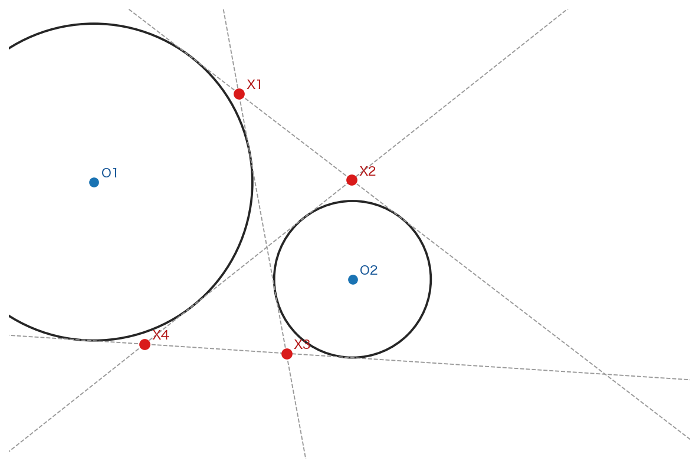
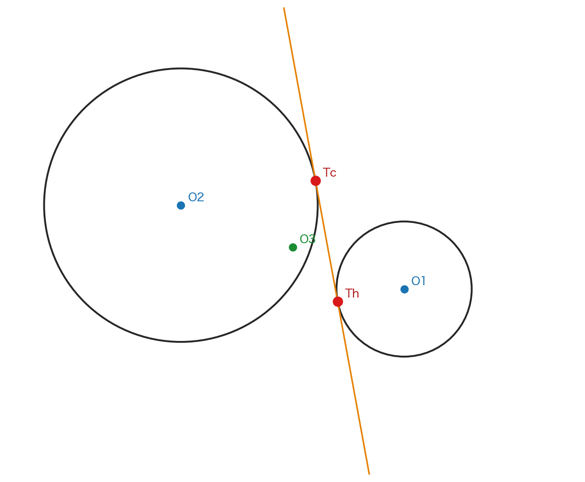
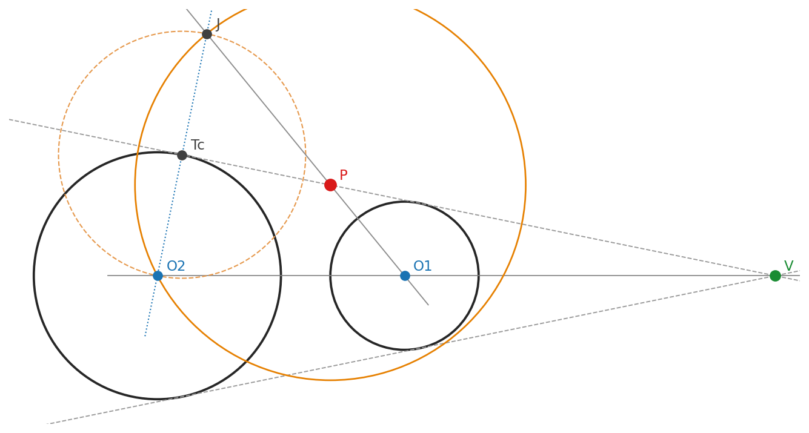

第8回: 傍心と四中心の対称性 — 内心の「双子」を依存構造の鏡像として見る#
主題: 五心の最後の一群、傍心 (Excenter) を 外角の二等分線 から組み立てる。内角の二等分線が内心 \(I\) を生んだのに対し、外角を混ぜると三つの傍心 \(I_A, I_B, I_C\) が生まれ、\(I\) と合わせて 四つの中心 が三角形の辺について 対称的 に配置される。
副題: 内心と傍心は「内角 ↔ 外角」 を入れ替えただけの 双子 である。この対称性は、座標（バリセントリックの符号反転）でも、L7 で導入した 依存グラフの鏡像 でも見える。今日は新しい道具を足さず、DataFrame → 有向グラフを復習 しながら、「内 ↔ 外」 の対称を構造として確かめる。
学習目標
傍心を 「一つの内角と二つの外角の二等分線は一点で交わる」 という命題から、L6（内心 = 角の二等分線）の結果に帰着させる形で導けるようになる。
内心 \(I\) と三つの傍心 \(I_A, I_B, I_C\) の 四中心が辺について対称に並ぶ ことを、作図とバリセントリック座標 \((\pm a : \pm b : \pm c)\) の 符号 で説明できるようになる。
L7 の Construction Protocol → DataFrame → 有向グラフ (networkx) を 復習 し、内心と傍心が「内角二等分線 ↔ 外角二等分線」 だけ違う 構造の鏡像 であることを依存グラフで確かめる（ggblab_extra 機能の復習、新道具なし）。
(伏線継続・接線方向への一歩) 内心と傍心の対称は、いま「三角形の中の鏡像」 だが、L9 で学生自身が発見する山場になり、後（L12–L13）で Dandelin 球による楕円の二焦点の対称性 の二次元版だと分かる。今日の「内 ↔ 外の対称」 は、円錐曲線の 二焦点の対称 への最初の予感である。
0. 前回 (第 7 回) の振り返り — そして今日の「双子」#
前回は 垂心 \(H\)（高さ）を外心へ帰着させて作り、外心 \(O\)・重心 \(G\)・垂心 \(H\) が一直線（Euler 線）に並ぶことを見た。そして三中心を 依存グラフ に外部化し、共線が「偶然」 ではなく「共通の前提（三頂点）から派生する必然」 だと読み解いた。内心 \(I\) だけは Euler 線に乗らなかった —— \(O, G, H\) が頂点の一次結合なのに、内心は 辺長（計量）で重みづけ された点だったからである。
今日はその内心 \(I\) に戻り、双子の傍心 を作る。内心は「内角 の二等分線（三辺から等距離、三角形の 内側）」 だった。では「外角 の二等分線」 を混ぜると何が起きるか —— 三辺の直線（線を無限に延ばしたもの）からはやはり等距離だが、三角形の外側 に落ちる点、傍心 が現れる。内角 ↔ 外角を入れ替えるだけで内心の鏡像が三つ生まれる。今日はこの「内 ↔ 外の対称」 を、作図・座標・依存グラフの三つで確かめる。
Note
目標の確認 —— @Codex で達成目標を引く 達成目標を @Codex に lancedb-rag（教材ドメイン RAG）で確認してもらえる（L5 から運用）。 （プロンプト例）@Codex この回（L8 傍心・四中心の対称）の達成目標を lancedb-rag で調べて、要点を整理して。 特に「内心と傍心は内角 ↔ 外角を入れ替えた双子で、依存グラフでも鏡像になる」 が腑に落ちるか、自分の理解と照らしてから先へ進む。
1. 傍心への道 — 外角の二等分線#
傍心は、L6 の内心とほぼ同じ命題から出発する。違いは「内角」 が「外角」 に変わるところだけ：
外角の二等分線の特徴づけ: 角 \(\angle BAC\) の 外角 の二等分線上の点も、二辺 \(AB\), \(AC\) を含む 二直線 から等距離にある。ただし内角二等分線とは 辺のどちら側にいるか が違う。
傍心の共点性: 一つの頂点の 内角 の二等分線と、他の二つの頂点の 外角 の二等分線は、一点で交わる。この点を、最初の頂点に 対する傍心 と呼ぶ。
注目したいのは、これも 新しい証明を要しない こと —— 内角・外角の二等分線はいずれも「二辺の直線から等距離の点の軌跡」 であり、L6 で証明した二等分線の特徴づけ（と等距離からの共点性） にそのまま帰着する。内角を外角に差し替えるだけで、内心の議論が傍心の議論に「写る」。
2. ggblab セットアップと三角形の準備#
using Pkg
Pkg.activate("../..") # この教材プロジェクトの環境を有効化
Pkg.resolve()
Pkg.instantiate() # 必要なパッケージを用意（初回は少し時間がかかる）
using GeoGebra
ENV["GGB_DIRECT_TRANSPORT"] = "true" # ggblab とアプレットの直接通信を有効化
inject_applet()
@ggb :const :new
@ggb A=(0, 0)
@ggb B=(6, 0)
@ggb C=(1, 4)
@ggb Polygon(:A, :B, :C)
3. 解くべき命題を発見する#
内角の二等分線（L6）と、それに直交する外角の二等分線を引いて、内心と傍心を並べて観察する（規律1: 各オブジェクトを一意のシンボルに、入れ子にしない）。
# 内角の二等分線（L6 の再利用）
@ggb wa = AngleBisector(:B, :A, :C) # 内角 A
@ggb wb = AngleBisector(:A, :B, :C) # 内角 B
@ggb wc = AngleBisector(:A, :C, :B) # 内角 C
# 外角の二等分線 = 各頂点で内角二等分線に直交する直線
@ggb wa_ext = PerpendicularLine(:A, :wa)
@ggb wb_ext = PerpendicularLine(:B, :wb)
@ggb wc_ext = PerpendicularLine(:C, :wc)
# 内心（L6）と三つの傍心（規律1: 入れ子にしない）
@ggb I = Intersect(:wa, :wb) # 内心 = 内角二本
@ggb Ia = Intersect(:wa, :wb_ext) # A に対する傍心 = 内角 A + 外角 B（外角 C 上にも乗る）
@ggb Ib = Intersect(:wb, :wc_ext) # B に対する傍心
@ggb Ic = Intersect(:wc, :wa_ext) # C に対する傍心
観察1: \(I_A\) は内角 \(A\) の二等分線と外角 \(B\) の二等分線の交点だが、外角 \(C\) の二等分線 \(w_{c\_ext}\) 上にも乗る（Intersect(:wa, :wc_ext) も同じ点）。傍心も「三本が一点で交わる」 型である。
観察2: 内心 \(I\) は三角形の内側、三つの傍心 \(I_A, I_B, I_C\) はそれぞれ外側に落ち、四点が 辺について対称的 に並ぶ。
問い: \(A, B, C\) を動かしても成り立つか？ 内心と傍心は、構造のどこが「同じ」 でどこが「鏡像」 なのか？ —— L6（内心）と同じ「観察から命題への移行」 だが、今日は 対称性そのもの が問いになる。
4. 証明と座標 —— 内心へ帰着し、符号で対称を読む#
主命題: 一つの内角の二等分線と他の二つの外角の二等分線は一点 \(I_A\) で交わり、\(I_A\) は三辺の直線から等距離（三角形の外側）にある。この点を中心とし三辺の直線に接する円を 傍接円 (Excircle) と呼ぶ。
証明: L6 の Lemma（二等分線上の点は二辺の直線から等距離）は、内角でも外角でも成り立つ（合同 \(\triangle AXP \equiv \triangle AXQ\) は角の内外に依らない）。\(A\) の内角二等分線上の点は辺 \(AB, AC\) の直線から等距離、\(B\) の外角二等分線上の点は辺 \(BA, BC\) の直線から等距離。二本の交点 \(I_A\) は三辺すべての直線から等距離 → \(C\) の外角二等分線上にもある。ゆえに三本は一点 \(I_A\) で交わる。\(\blacksquare\)
Important
定義 内心 \(I\) に対し、各頂点に対応する三つの点 \(I_A, I_B, I_C\) を 傍心 (Excenters)、それらを中心とし三辺の直線に接する三円を 傍接円 (Excircles) と呼ぶ。\(I, I_A, I_B, I_C\) を合わせて、日本の幾何教育で言う「五心」 のうちの 四心（内心と三傍心）をなす。
Attention
内心と傍心は双子 —— バリセントリックの「符号」 で対称を読む
L6 で、内心のバリセントリック座標は 対辺の長さ で重みづけた \((a : b : c)\) だった。傍心は、その 一つの符号を反転 しただけである：
中心 |
二等分線の組み合わせ |
バリセントリック座標 |
|---|---|---|
内心 \(I\) |
内角 A・内角 B・内角 C |
\((\,a : b : c\,)\) |
傍心 \(I_A\) |
内角 A・外角 B・外角 C |
\((\,{-}a : b : c\,)\) |
傍心 \(I_B\) |
外角 A・内角 B・外角 C |
\((\,a : {-}b : c\,)\) |
傍心 \(I_C\) |
外角 A・外角 B・内角 C |
\((\,a : b : {-}c\,)\) |
→ 内心 \((a:b:c)\) から、辺長の符号を一つ反転 すると傍心になる。「内角 ↔ 外角」 という幾何の差し替えが、座標では「符号の反転」 という最も単純な対称として現れる。L5 の重心 \((1:1:1)\)、L6 の内心 \((a:b:c)\) に続き、四中心が一つの座標系（バリセントリック）の中で、重みと符号だけで区別される —— これが五心を「ばらばらの中心」 でなく「一つの族」 として見る視点である。
そしてこの「内 ↔ 外」「\(+ \leftrightarrow -\)」 の対称は、後で 円錐曲線の二つの焦点 の対称（一方が他方の鏡像）として戻ってくる（L10+）。今日の四中心の対称は、その縮図である。
5. ggblab_extra 復習 —— 内心と傍心を「依存グラフの鏡像」 として見る#
新しい道具は足さない。L7 で導入した Construction Protocol → DataFrame → 有向グラフ を 復習 し、内心 \(I\) と傍心 \(I_A\) が 構造のどこで分岐するか をグラフで確かめる。
# L7 と同じ作法（Julia から Python の道具を借りる）
using PythonCall
pl = pyimport("polars")
nx = pyimport("networkx")
ggb = pyimport("ggblab")
ggblab_extra = pyimport("ggblab_extra")
ggb.file = pyimport("ggblab.file").ggb_file()
ggb.parser = pyimport("ggblab.parser").ggb_parser()
ggb.schema = pyimport("ggblab.schema").ggb_schema()
ConstructionIO = ggblab_extra.ConstructionIO
# 作図全体を DataFrame に取り出し、依存関係を有向グラフに積む（L7 §5 と同じ手順）
df = @await ConstructionIO.initialize_dataframe(ggb, use_applet=true)
names = [pyconvert(String, n) for n in df["Name"].to_list()]
G_dag = nx.DiGraph()
for row in df.iter_rows(named=true)
name = pyconvert(String, row["Name"])
defn = pyconvert(String, row["Command"])
G_dag.add_node(name)
for src in names
if src != name && occursin(Regex("\\b" * src * "\\b"), defn)
G_dag.add_edge(src, name)
end
end
end
println("ノード数 = ", pyconvert(Int, G_dag.number_of_nodes()),
" / 辺数 = ", pyconvert(Int, G_dag.number_of_edges()))
nx.write_network_text(G_dag)
# 内心 I と傍心 Ia の「直接の親」（それを作るのに使った二本の二等分線）を比べる
parents_I = Set(pyconvert(String, x) for x in G_dag.predecessors("I"))
parents_Ia = Set(pyconvert(String, x) for x in G_dag.predecessors("Ia"))
println("I の親: ", sort(collect(parents_I))) # 内角二本: wa, wb
println("Ia の親: ", sort(collect(parents_Ia))) # 内角 wa + 外角 wb_ext
println("共有する親: ", sort(collect(intersect(parents_I, parents_Ia)))) # wa を共有
println("分岐点: I は wb / Ia は wb_ext（= wb に直交）")
# 祖先までたどれば、内心も傍心も結局は同じ三頂点 A,B,C に収束する
anc_I = Set(pyconvert(String, x) for x in nx.ancestors(G_dag, "I"))
anc_Ia = Set(pyconvert(String, x) for x in nx.ancestors(G_dag, "Ia"))
println("I と Ia が共有する祖先: ", sort(collect(intersect(anc_I, anc_Ia))))
グラフで見ると: 内心 \(I\) と傍心 \(I_A\) は、祖先（最終的な根）は同じ三頂点 \(A, B, C\)。違うのは 直接の親 の片方だけ —— \(I\) は内角二等分線 \(w_b\)、\(I_A\) はその外角版 \(w_{b\_ext}\)（\(w_b\) に直交する直線）。つまり依存グラフの上で、内心と傍心は 一つのノードを「内角 → 外角」 に差し替えただけの鏡像 である。座標の「符号反転」（§4）と、グラフの「親の差し替え」 が、同じ「内 ↔ 外の対称」 を別の言葉で語っている。L7 で見た「共有祖先 = 偶然でない理由」 が、今日は「鏡像 = 対称の理由」 として再演されている。
Tip
進捗の確認 —— セル出力を @Codex に読ませる @Codex は jupyter-server-mcp であなたのセル出力を直接読む（プロンプトだけの対話ではない）。 （プロンプト例）@Codex ここまでのセル出力を読んで、達成目標①（傍心を内心へ帰着）②（四中心の対称を符号で説明）③（依存グラフで内心↔傍心の鏡像を確認）にどこまで到達したか、まだ埋まっていないセルはどこか、具体的に挙げて。
6. 停滞と画期の照射 —— 四中心の対称、そして二焦点への伏線#
日本の幾何教育が傍心を「五心」 の一つに数えるのは、世界標準では珍しい伝統である（欧米の初等幾何では傍心は別格扱いされることが多い）。だがこの伝統のおかげで、皆さんは 内心と傍心の対称 —— 内角と外角、正と負 —— を早くから手にしている。この対称は、教科書では「四つの中心がある」 と並べられるだけで、なぜ対称なのか はあまり語られない。
次回（第 9 回）は、この 内心と傍心の辺に関する対称性 を、学生自身が発見する第一の山 として扱う。今日 §5 で見た「依存グラフの鏡像」 や §4 の「符号反転」 が、その発見の手がかりになる。そしてさらに先（L12–L13）で、この対称が Dandelin 球による楕円の二焦点の対称性 の二次元版であることが見えてくる —— 二つの焦点は、円錐を切る二つの内接球の接点であり、互いに鏡像の関係にある。
Note
伏線 —— 「内 ↔ 外の対称」 から、円錐曲線の「二焦点の対称」 へ 今日の四中心は、内角 ↔ 外角・正 ↔ 負という 一組の対称 で結ばれていた。後の円錐曲線では、楕円・双曲線が 二つの焦点 を持ち、それらが互いに鏡像（中心や軸について対称）であることが主役になる。
L6 の伏線（「等距離」 → 「距離の比」＝離心率）、L7 の伏線（隠れた直線＝軸・準線）と、今日の伏線（内 ↔ 外の対称＝二焦点の対称）は、すべて 同じ一点に収束する —— 円錐を平面で切ると現れる楕円が、なぜ二つの焦点・対称な準線・一定の離心率を持つのか。その「なぜ」 の道具立て（等距離・隠れた直線・内外の対称）を、五心の回（L4–L9）で一つずつ仕込んでいる。
ここで出てくる焦点・準線・Dandelin・離心率といった語は、今は分からなくて正常。L10+ で必ず戻ってくる。今日は「内心の双子＝傍心」「内 ↔ 外は座標では符号反転」 という対称の手応えだけ持って先へ進めばよい。
今回の課題
必修
三角形を一つ作図し、内心 \(I\) と三つの傍心 \(I_A, I_B, I_C\)、および内接円・傍接円を構成せよ。各傍心が「一つの内角＋二つの外角の二等分線」 の交点であること（外角 C の二等分線上にも乗ること）を、
Intersectの一致で確かめよ。Construction Protocol を DataFrame → 有向グラフ（networkx）に変換し（L7 の復習）、内心 \(I\) と傍心 \(I_A\) が 同じ祖先（三頂点） を持ち、直接の親が一本だけ（内角 ↔ 外角）違う ことを
predecessors/ancestorsで示せ。
思考課題 3. 内心 \((a:b:c)\) と傍心 \((-a:b:c)\) の「符号反転」 と、依存グラフの「親の差し替え」 は、同じ「内 ↔ 外の対称」 を語っている。この対称が、後で出る 楕円の二つの焦点の対称 とどう重なりそうか、現時点の自分の言葉で書き留めよ（第 9 回の発見、第 10–15 回の立論の素材）。
Important
授業末尾の自己評価 —— @Codex に聞いてみる（任意、L4–L7 から継続）
L4–L7 と同じ template で、本回の自己評価を試してください。任意です。@Codex は jupyter-server-mcp で全セルの入出力を読み、lancedb-rag で lesson 文脈を参照して個別評価を返します。
@Codex 今日のノートブックを全 cell 読んで評価してください。
次の三つを区別して articulate してください:
1. 自分で考えて書いた cell — 思考の痕跡が残っている部分
2. AI 委託で書いたが、理解して受け入れた cell — 動いて、なぜ動くか説明できる部分
3. AI 委託で書いたが、なぜ動くか説明できない cell — 動いているが、理解で未到達の部分
加えて: 今日の主題（傍心 / 内心への帰着 / 四中心の対称 / バリセントリックの符号 / 依存グラフの鏡像）
に対する到達度、完成しないまま残った問い、次回（L9 内心と傍心の辺対称性＝自分で発見する回）への接続点。
特に「内心と傍心は内角↔外角を入れ替えた双子で、座標では符号反転・グラフでは親の差し替え」
が、一つの対称の別表現だと腑に落ちたか、誤魔化さず正直に articulate してください。
JupyterAI のやり取り log は LMS 経由で先生に届きます —— 学期末立論（第 15 回）の materials として毎週蓄積。「先週は気付かなかったことに今週は気付けた」 が回を重ねるごとに起こるか、皆さん自身でも観察してください。
7. 次回への接続#
次回（第 9 回）は、本日並べた 内心と傍心の辺に関する対称性 を、学生自身が発見する 回にする。これまでの五心（L4 外心・L5 重心・L6 内心・L7 垂心・L8 傍心）で仕込んだ道具 —— Euclid 流の命題連鎖、バリセントリック座標、Construction Protocol → DataFrame → 有向グラフ —— を総動員し、「四中心がなぜ対称に並ぶか」 を自分の手で言語化する。ここが前半（五心）の 第一の山 であり、後半（L10+ 円錐曲線）で Dandelin 球の二焦点対称 へと接続される最初の結び目になる。
そして今後も規律1（各オブジェクトを一意のシンボルに束縛し、入れ子にしない）が効く —— 名前のないオブジェクトは、グラフのノードにできず、鏡像も比べられないからである（教材オーサリング規約（MCP lancedb-rag「教材オーサリング規約 ggblab セル シンボル」project=textbook） 規律1）。
枕（次々回への予告）—— 二円から立ち上がる三つの作図#
今日の傍接円は「三角形の三辺（直線）に接する円」だった。内接円・傍接円はどちらも 「与えられた線に接する円」＝ Apollonius の接触問題 の一族である。次々回（円錐曲線への入り口）では三角形を離れ、二つの円に共通接線を引く Apollonius の配置へ進む。その枕として、二円から立ち上がる三つの作図を予告として置く。三つとも、ここまでの主題の素直な延長線上にある：
見えない円・見えない点を、構造から取り出す（L7 の Euler 線「隠れた直線」の、円版）。
正しい対象に束縛するか、目立つ罠に乗るか（今日の「内 ↔ 外の鏡像」と同じ機構。ここでの罠は 相似中心 (similitude center) —— 最も目立つが、答えではない中心）。
Note
この三題は研究用ベンチでもある 以下の三作図（円 / 軸 / 点）は、LLM が二円の隠れた構造を「正しい対象に束縛して命名できるか」を測る研究ベンチ ConstructGap（moy-1 円 / moy-2 軸 / moy-3 点）の中核問題でもある。皆さんが今 ggblab で作図して確かめることを、現在の frontier LLM は——強制しないと——しばしば「目立つ罠」で済ませてしまう。今日の「正しい対象への束縛」が、人と AI の境界を測る probe になっている。
枕-1（円）—— 4 本の共通接線の交点は、隠れた一つの円に乗る（東田円）#
二円 \(K_1, K_2\) には共通接線が 4 本（外接線 2・内接線 2）。外接線 1 本 × 内接線 1 本の交点を \(X_1,\dots,X_4\) とすると、この 4 点は \(O_1O_2\) を直径とする一つの円（東田円）の上に乗る —— すなわち \(\angle O_1 X_k O_2 = 90^\circ\)（Thales、L4）。罠は、同種どうしの交点 \(H_e\)（外×外）・\(H_i\)（内×内）＝相似中心。これを直径に取る（\(\angle H_e X_k H_i\)）と幾何的に偽（\(\approx 42^\circ/104^\circ\)）。今日の「目立つが偽の中心 vs 正しい中心」がそのまま現れる。
{kind=link}

Fig. 1 moy-1（円）。二円と 4 本の共通接線（破線）、外接線 × 内接線の交点 \(X_1\dots X_4\)。これらは \(O_1O_2\) を直径とする「東田円」の上に乗る（\(\angle O_1X_kO_2=90^\circ\)）。#
# 二円。外側相似中心 He から引いた接線 = 外接線、内側相似中心 Hi から = 内接線。
# （相似中心 = 罠の attractor。だが接線を引く足場としては正しく使える。）
@ggb :const :new
@ggb O1=(0, 0)
@ggb O2=(8, 0)
@ggb K1=Circle(:O1, 3) # 半径 3（大きい方）
@ggb K2=Circle(:O2, 1) # 半径 1
@ggb He=(3*O2 - O1)/2 # 外側相似中心 = O1,O2 を r1:r2=3:1 に外分（外接線の交点）
@ggb Hi=(3*O2 + O1)/4 # 内側相似中心 = 内分（内接線の交点）
# He / Hi から K1 への接線を Thales 円で作る（規律1: 入れ子にしない・接点を一意名に）。
@ggb Me=Midpoint(:He, :O1)
@ggb thE=Circle(:Me, :O1) # He,O1 を直径とする Thales 円
@ggb Te1=Intersect(:K1, :thE, 1)
@ggb Te2=Intersect(:K1, :thE, 2)
@ggb L1=Line(:He, :Te1) # 外接線 1
@ggb L2=Line(:He, :Te2) # 外接線 2
@ggb Mi=Midpoint(:Hi, :O1)
@ggb thI=Circle(:Mi, :O1) # Hi,O1 を直径とする Thales 円
@ggb Ti1=Intersect(:K1, :thI, 1)
@ggb Ti2=Intersect(:K1, :thI, 2)
@ggb L3=Line(:Hi, :Ti1) # 内接線 1
@ggb L4=Line(:Hi, :Ti2) # 内接線 2
# 外接線 × 内接線（mixed）の 4 交点。
@ggb X1=Intersect(:L1, :L3)
@ggb X2=Intersect(:L1, :L4)
@ggb X3=Intersect(:L2, :L3)
@ggb X4=Intersect(:L2, :L4)
# 隠れた円 = O1O2 を直径とする円（東田円）。X1..X4 がこの上に乗る。
@ggb M=Midpoint(:O1, :O2)
@ggb higashida=Circle(:M, :O1)
@ggb ang1=Angle(:O1, :X1, :O2) # 90°（Thales）← X1 が東田円上の証拠
読み方: \(X_1\dots X_4\) は 4 本の接線の交点として「ばらばらに」できたのに、higashida（\(O_1O_2\) 直径円）の上にぴたりと乗る。\(\angle O_1X_1O_2=90^\circ\) がその証拠。目立つ交点 \(H_e, H_i\)（相似中心）を直径に取るのが罠 —— 正しい直径は与えられた二中心 \(O_1,O_2\)。L7 の「隠れた直線」が、ここでは「隠れた円」になっている。
枕-2（軸）—— 中心の中点は、二つの接点から等距離#
内側共通接線が \(K_1\) に \(T_h\)、\(K_2\) に \(T_c\) で接するとき、二中心の中点 \(O_3\) は \(T_h, T_c\) から等距離（\(|O_3T_h|=|O_3T_c|\)、つまり \(O_3\) は \(T_hT_c\) の垂直二等分線上）。罠のない一段の計量で、座標があれば直ちに閉じる（解析側の control）。
{kind=link}

Fig. 2 moy-2（軸）。内側共通接線の二接点 \(T_h, T_c\) と、二中心の中点 \(O_3\)。\(O_3\) は \(T_h, T_c\) から等距離。#
@ggb :const :new
@ggb O1=(0, 0)
@ggb O2=(8, 0)
@ggb h=Circle(:O1, 1) # 半径 1
@ggb c=Circle(:O2, 3) # 半径 3
@ggb Hi=(3*O1 + O2)/4 # 内側相似中心 = O1,O2 を rh:rc=1:3 に内分（内接線が通る）
@ggb Mh=Midpoint(:Hi, :O1)
@ggb thh=Circle(:Mh, :O1) # Hi,O1 直径の Thales 円
@ggb Th=Intersect(:h, :thh, 1) # 内接線の h 上の接点
@ggb tangent=Line(:Hi, :Th) # 内側共通接線
@ggb Tc=Intersect(:tangent, :c, 1)# 同じ接線の c 上の接点
@ggb O3=Midpoint(:O1, :O2) # 中心の中点
@ggb dh=Distance(:O3, :Th) # |O3 Th|
@ggb dc=Distance(:O3, :Tc) # |O3 Tc| ← dh と等しい（√13 ≈ 3.606）
読み方: dh と dc が一致する。一段で閉じるこの題は、moy-1（隠れた円）・moy-3（隠れた点）の「作図の難所」を測る**基準線（control）**になる —— ここで全員が届くから、届かない題との差が「難しさ」を語れる。
枕-3（点）—— Apollonius 円: \(\angle OPV = 90^\circ\)#
二円の 内側相似中心 \(O\)（内接線の交点）と 外側相似中心 \(V\)（外接線の交点）を直径の両端とする円が Apollonius 円。\(|PO_2|:|PO_1|=r_2:r_1\) をみたす点 \(P\) は、この \(OV\) を直径とする円の上に乗る（\(\angle OPV=90^\circ\)、再び Thales）。罠は、moy-1 と同じく \(O_1O_2\) を直径とする円（目に見える二中心）—— \(P\) はそこには乗らない。
{kind=link}

Fig. 3 moy-3（点）。内側相似中心 \(O\)・外側相似中心 \(V\) を直径とする Apollonius 円（橙）と、その上の点 \(P\)。\(\angle OPV=90^\circ\)。罠は \(O_1O_2\) 直径円。#
@ggb :const :new
@ggb O1=(10, 0)
@ggb O2=(-10, 0)
@ggb K1=Circle(:O1, 6) # 小さい円
@ggb K2=Circle(:O2, 10) # 大きい円
@ggb O=(10*O1 + 6*O2)/16 # 内側相似中心 = O1,O2 を r2:r1=10:6 に内分
@ggb V=(10*O1 - 6*O2)/4 # 外側相似中心 = 外分（外接線の交点）
# P を比を直接使わず構成する: 外接線の接点 Tc → O2 の鏡像 J → ray(O1,J) ∩ 外接線。
@ggb Mv=Midpoint(:V, :O2)
@ggb thv=Circle(:Mv, :O2) # V,O2 直径の Thales 円
@ggb Tc=Intersect(:K2, :thv, 1) # 外接線が K2 に接する接点
@ggb extTan=Line(:V, :Tc) # 外側共通接線
@ggb J=2*Tc - O2 # O2 を Tc に関して対称（= 2Tc − O2）
@ggb rO1J=Line(:O1, :J)
@ggb P=Intersect(:rO1J, :extTan) # P = ray(O1,J) ∩ 外接線
# Apollonius 円（OV 直径）と罠（O1O2 直径）。P は前者の上、後者の上ではない。
@ggb K=Midpoint(:O, :V)
@ggb apollonius=Circle(:K, :O) # OV 直径円 = Apollonius 円
@ggb Mt=Midpoint(:O1, :O2)
@ggb trap=Circle(:Mt, :O1) # O1O2 直径円 = 罠
@ggb angOPV=Angle(:O, :P, :V) # 90°（Thales: P が OV 直径円上）
読み方: angOPV が \(90^\circ\)。\(P\) を束縛すべき正しい円は、目に見える二中心 \(O_1,O_2\) ではなく、見えない相似中心 \(O,V\) を直径とする Apollonius 円。「深く推論しながら、結論を正しい対象に束縛して命名する」 —— ここが次々回の核心であり、今日の「内 ↔ 外の鏡像」「正しい中心 vs 目立つ罠」が、三角形から二円・円錐曲線へと運ばれていく結び目である。
参考文献#
Incircle and excircles - Wikipedia（内心・傍心・傍接円）
External angle bisector - Wikipedia（外角の二等分線は内角の二等分線に直交）
Barycentric coordinate system - Wikipedia（内心 \((a:b:c)\)、傍心 \((-a:b:c)\) 等）
Circles of Apollonius - Wikipedia（枕、二円の相似中心・Apollonius 円、角二等分定理による Thales 証明）
ConstructGap ベンチ moy-suite（枕の三題：円 / 軸 / 点）— concept doc
ConstructGap/papers/moy_suite_three_axes.md、作図=連立方程式列（MCPlancedb-rag「作図 連立方程式 moy-1 moy-2 東田円 Thales」project=conversations）NetworkX documentation（
predecessors,ancestors）前回 第7回(垂心・Euler 線)（MCP
lancedb-rag「第7回 垂心 Euler 線 依存グラフ networkx」project=textbook） — DataFrame → 有向グラフ、共有祖先内心傍心対称と二焦点の系譜 discussion_memo（MCP
lancedb-rag「内心傍心 対称 Dandelin 二焦点 二次元版」project=conversations）道具のロードマップ ggblab_extra ロードマップ（MCP
lancedb-rag「ggblab_extra 機能配置 ロードマップ」project=textbook） / 著者規約 教材オーサリング規約（MCPlancedb-rag「教材オーサリング規約 ggblab セル シンボル」project=textbook）